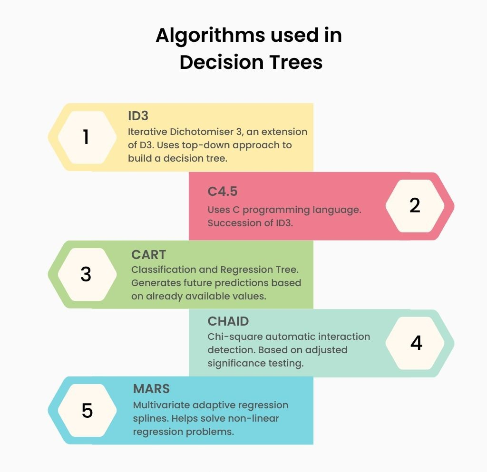
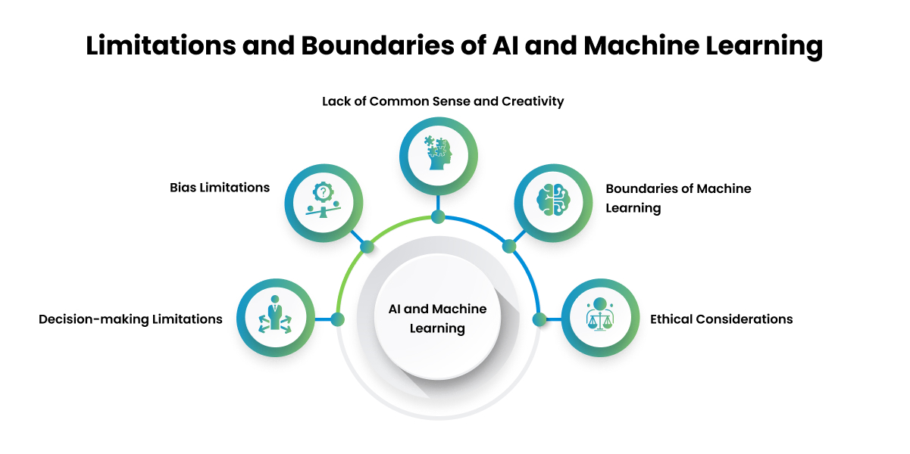

Introduction to Machine Learning:
1.What Does it Mean to Learn?
- Definition of learning in the context of machine learning.
- Different types of learning: supervised, unsupervised,reinforcement.
- Click here for YOUTUBE Class
2.Canonical Learning Problems?
- Classification.
- Regression.
- Clustering.
- Dimensionality Reduction.
3.The Decision Tree Model of Learning?
- Concept of decision trees.
- How decision trees represent hypotheses.
- Basic algorithm for building decision trees.
- Click here for YOUTUBE Class
4.Formalizing the Learning Problem?
- Definition of the learning problem mathematically.
- Introduction to loss functions.
- Understanding the trade-off between bias and variance.
5.ID3 Algorithm?
- Overview of the ID3 (Iterative Dichotomiser 3) algorithm.
- How ID3 constructs decision trees.
- Example applications of ID3.
- Click here for YOUTUBE Class

Limits of Learning:
1.Data Generating Distributions?
- Understanding the source of data.
- Importance of data distribution in learning.
2.Inductive Bias?
3.Not Everything is Learnable?
- Introduction to the concept of the No Free Lunch theorem..
- Understanding the limitations of learning algorithms.
4.Underfitting and Overfitting?
5.Separation of Training and Test Data?
- Importance of splitting data into training and test sets.
- Cross-validation techniques.
6.Models, Parameters, and Hyperparameters?
- Differentiating between models, parameters, and hyperparameters.
- Tuning hyperparameters for optimal performance.
7. Real World Applications of Machine Learning?
- Case studies and examples of machine learning applications across various domains.
- Ethical considerations in machine learning applications.
- Click here for YOUTUBE Class

Geometry and Nearest Neighbors:
1.From Data to Feature Vectors?
2.k-Nearest Neighbors (k-NN)?
3.Decision Boundaries?
- Understanding decision boundaries in classification problems.
- Visualizing decision boundaries.
4. k-means Clustering?
- Overview of the k-means clustering algorithm.
- How k-means partitions data into clusters.
- Applications of k-means clustering.
- Click here for YOUTUBE Class
5.High Dimensions?
- Challenges of working with high-dimensional data.
- Techniques for dimensionality reduction.